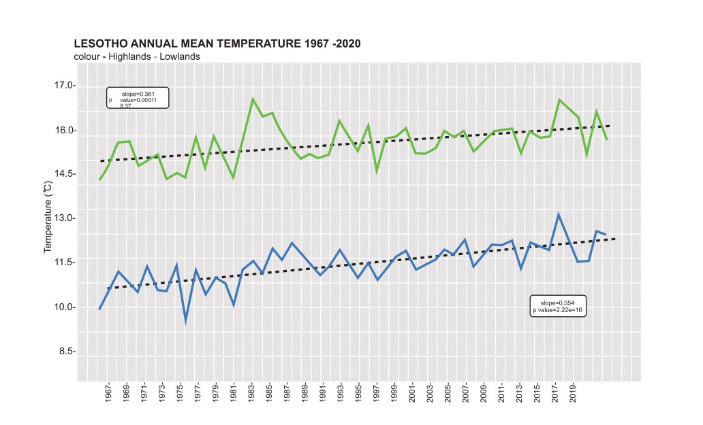
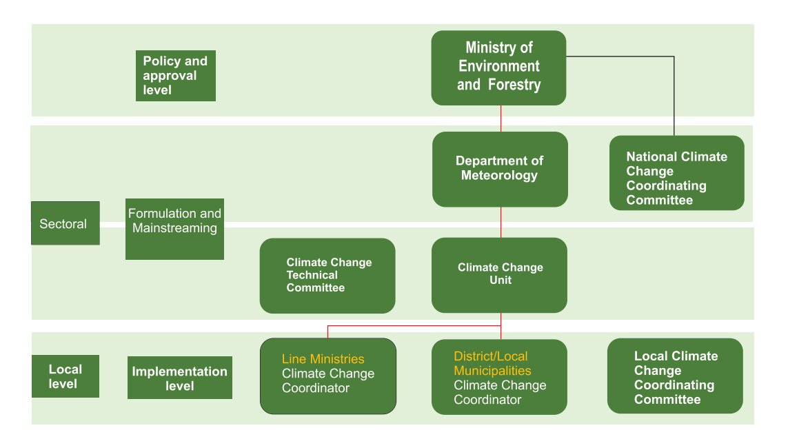
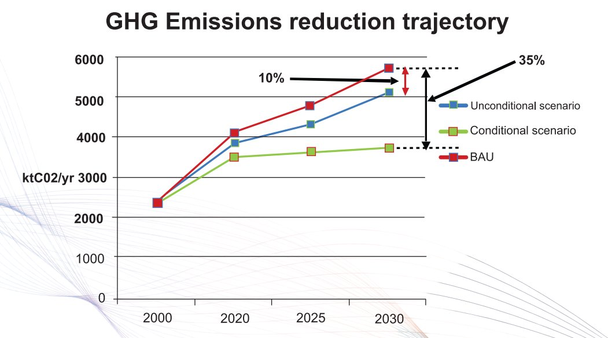

AFOLU | Agriculture, Forestry, and Other Land Use |
BAU | Business As Usual |
BTR | Biennial Transparency Reports |
BUR | Biennial Update Reports |
CA | Conservation Agriculture |
CBD | Convention on Biological Diversity |
CBNRM | Community Based Natural Resources Management |
CE | Circular Economy |
COP | Conference of Parties |
ETF | Enhanced Transparency Framework |
EWS | Early Warning System |
GCF | Green Climate Fund |
GDP | Gross Domestic Product |
GHG | Greenhouse Gas |
GOL | Government of Lesotho |
IPCC | Intergovernmental Panel on Climate Change |
IPPU | Industrial Processes and Product Use |
JICA | Japanese International Cooperation Agency |
LMS | Lesotho Meteorological Services |
LPG | Liquefied Petroleum Gas |
LULUCF | Land use, land use change and Forestry |
MEAS | Multilateral Environmental Agreements |
MEM | Ministry of Energy and Meteorology |
MIT | Mitigation |
MPG | Modalities, Procedures, Guidelines |
MRV | Measurement, Reporting and Verification |
NAP | National Adaptation Process |
NC | National Communication |
NCCC | National Climate Change Committee |
NDC | Nationally Determined Contribution |
NDP | National Development Plan |
NGO | Non-governmental Organisation |
PA | Paris Agreement |
SDG | Sustainable Development Goals |
UNFCCC | United Nations Framework Convention on Climate Change |
Pursuant to Article 4, Paragraph 2 of the Paris Agreement, Parties to the United Nations Framework Convention on Climate Change (UNFCCC) are required to prepare, communicate, and maintain successive Nationally Determined Contributions (NDCs) that they intend to achieve. NDCs include efforts by each country to reduce national emissions and adapt to the impacts of climate change. According to the NDC cycle, as set under the Paris Agreement, countries shall update their NDCs every five years.
In 2017, Lesotho submitted its first Nationally Determined Contributions (NDC) to the United Nations Framework Convention on Climate Change (UNFCCC) Secretariat. In this initial document, the focus is firmly on adaptation actions as they tend to have strong developmental benefits such as poverty reduction that are a priority for developing countries. At the same time, the only objectives with quantitative targets included in the NDC were on mitigation, namely a 10% unconditional GHG emissions reduction with a further 15% target conditional on international support.
As one of the most vulnerable countries to climate change, Lesotho is committed to reducing its contribution to climate change (mitigation) and combating the effects of climate change that the country is already experiencing, such as rising temperatures, droughts/floods, and rising food insecurity due to stress on agricultural production, on which the Lesotho population is heavily reliant. The problem is expected to worsen in the future as global temperatures rise. By 2030, the country's population is expected to grow by roughly 9%, resulting in increased demand for power, water, fossil fuels, land use change, and industrial products (BOS, 2019).
Since the 2017 NDC, Lesotho's government has been working on developing frameworks and implementing climate action in response to the increased need for climate change action, both to reduce its climate change impact (mitigation) and to increase the country's resilience to the changing climate (adaptation). In its pursuit to address climate change challenges, the Government of Lesotho established the National Climate Change Committee (NCCC), which is a multi-sectoral committee that includes representatives from government departments, local and international NGOs, academia, and technical experts to facilitate specific activities of climate change. The committee forms a platform for interacting and exchanging information, views and ideas and connecting efforts to address climate change issues in Lesotho. As part of efforts to curb climate change impacts, Lesotho has developed policies and strategies such as the National Climate Change Policy (NCCP) and its implementation strategy (NCCPIS), Lesotho's Climate-Smart Agricultural Investment Plan and Lesotho Energy Policy.
Lesotho is a mountainous, land locked country located between latitudes 28°S and 31°S and longitudes 27° E and 30° E in the interior of Southern Africa. It is an enclave surrounded by the Republic of South Africa. It has a total land area of about 30,355 square kilometres dominated by rugged terrain of the Maluti and Drakensberg ranges. The country is situated at the highest part of the Drakensberg escarpment with elevation ranging from 1,400m to 3,482m above sea level (Chakela, 1997). Based on latitude the climate of Lesotho is classified as temperate, however due to the high elevation, the mean temperature is noticeable lower than would be expected based on latitude.
The country is divided into four agro-ecological zones, the Lowlands, Foothills, Mountains, and Senqu River Valley. The lowlands make up 17% of the total area of the country and are located in the western part of the country. The Lowlands have a north-south extension of about 200km and a width of 25km (Hyden and Sekoli, 2000). They have an approximate elevation of 1,800m above sea level. To the east of the Lowlands are the Foothills which make up 15% of the total area and lie between 1,800m and 2,000m above sea level. The Mountains cover 59% of the total country area and lie between 2,000m and 3,482m above sea level. The Senqu River Valley forms a narrow strip of land along the banks of the Senqu (Orange) River and penetrates the Drakensberg Mountain ranges. The Senqu River Valley only makes up 9% of the total country area. The valley is 1,400m to 2,000m above sea level.
Lesotho is classified as a lower-middle income country with a Gross Domestic Product (GDP) of about M20.649 billion (USD1.25 billion) (2020) and a national gross income per capita of about M11,036 (USD670) (BOS, 2021).
However, this was a 6.5% decline from the previous year's GDP (CBL, 2021). The decline was mainly attributed to the impacts of the Covid 19 pandemic. The key contributors to the country's GDP (2020) include the primary sector comprising of agriculture, mining and quarrying contributing 18.9%, the secondary sector at 20.9% and the tertiary sector contributing 49.7% (BOS, 2021). Lesotho's Human Development Index (HDI) value for 2021 was 0.514, which puts the country in the low development category (UNDP, 2022). The agricultural activities play a more significant role than the estimated contribution to GDP suggests as a large proportion of the population rely on subsistence agriculture activities to feed themselves (World Bank).
An estimated 28 percent of the population resides in urban areas, which is expected to increase to 34 percent by 2030. The total population has been projected to increase to 2,192,356 by 2030 (BOS, 2019).
Lesotho's peak demand for electricity stands at 196 MW with locally generated hydropower accounting for 72 MW (Muela plant), Semonkong, 0.18 MW and 2 MW from mini hydro-power plant situated along the Mants'onyane River, and solar power of 30 MW (Ramarothole Solar Plant).
To meet its electricity demand, the country imports additional electricity from Mozambique and South Africa. Most of the population still relies on traditional biomass resources and liquid fuels to meet its energy needs which is closely associated with environmental degradation due to deforestation and soil erosion. However, there are plans to establish 80 MW hydropower plant at Oxbow Area, 1MW Minihydro at Katse Dam, Government.
Forestry currently covers around 1.5% of the land area but efforts to protect and grow forests have been ineffective and strong initiatives are needed. Furthermore, the land cover suitable for agriculture has declined to 9 percent due to encroachment on the most productive and potentially high-yielding land over the past decades, soil erosion, and other forms of environmental degradation and climate change. The encroachment is due, in part, to the lack of law enforcement and neglect by administrative authorities (GoL 2018).
Lesotho's location and topography expose it to the influences of both the Indian and Atlantic Oceans, with wide temperature differences. In Lesotho, temperatures are highly variable on diurnal, monthly and annual timescales, and are generally lower than those of other inland regions of similar latitudes in larger landmasses of both the northern and southern hemispheres. However, an overall trend of temperature increase has been observed as depicted in Figure 1, with the highlands warming faster than the lowlands.
A gradual increase in the mean daily maximum and minimum temperatures is projected for the near future until the end of the 21st century under all emission scenarios (LMS, 2021). The projected increase in temperatures becomes more significant during the mid and far future periods, especially under the high emission scenario. Nevertheless, slightly lower temperature increases are expected to occur in the mountain zones. Increased incidences of extreme heat and higher rates of evapotranspiration are also expected. These will have negative impacts on various aspects of local economic development and agricultural productivity.
Figure 1 - Observed Temperature for the Lowlands and Highlands of Lesotho, 1967-2020 (Source: Lesotho Meteorological Services, 2022)

The Ministry of Environment and Forestry through the Lesotho Meteorological Services (LMS) department is charged with the responsibility of monitoring and reporting on weather, climate, and climate change issues.
In addition, LMS ensures that the country fulfils Lesotho's obligations under the United Nations Framework Convention on Climate Change (UNFCCC) and the Paris Agreement. Other major responsibilities of the MEM include implementation of the Vienna Convention and Montreal Protocol on Substances that deplete the ozone layer; and provision of support to other Multilateral Environmental Agreements (MEAs). A National Climate Change Committee (NCCC) was formally established in 2013 to effectively coordinate climate change related matters in the country and act as a link between LMS and the various social and economic sectors.
To effectively achieve the objective of the National Climate Change Policy, members that serve in the NCCC have to be familiar with projected climate change episodes and events in the short and long term and must be appraised of the likely impacts of climate change.
Institutions, as a result, should have in place, adequate response measures to climate change. Educational institutions and all tiers of government including central government, local government as well as NGOs have a role to institutionalize climate change. A culture of networking and building on synergies at all levels and amongst the institutions is key to achieving the objective of the NCCC. It is against this background that the following institutional framework (Figure 2) and set up that will be effective in enabling coordination of climate change in the country was proposed.
Figure 2: Institutional framework for climate change coordination. (Source: National Climate Change Policy Implementation Strategy, 2017)

The 2017 Lesotho NDCs identified the management and availability of water as the key priority as it is essential for critical subsistence activities (food production) as well as human wellbeing, sanitation and more.
The NDCs also identified key initiatives to support the long-term management of water resources including:
Several of these activities overlap with objectives also identified in other sectors such as agriculture, food security, and human settlements, and many of the specific initiatives in this sector will include many of the same stakeholders across the sectors.
Additional actions include programs to expand rainwater harvesting, water storage and conservation techniques, water reuse, water use, and irrigation efficiency. Commentary on the background information and data sets that may have been used to support the development of these objectives and to further assess change.
In terms of mitigation, the NDC focuses largely on energy emission reductions. However, these other sectors are specifically mentioned as potential areas for action. The key mitigation targets for mitigation include a 10% GHG emission reduction from an assessed BAU, with an additional 25% reduction based on the international support for mitigation actions (Figure 3).
The key sectors/actions targeted for mitigation include:
It is of note that aside from the headline targets, there are no targets indicated for mitigation actions outside of the energy sector.
Figure 3: Trajectory of Lesotho's conditional and unconditional contribution for the period 2015-2030 (using GACMO model), based on GHG inventory data from the year 2000 as presented in Lesotho's First NDC

As part of the consultation process for this NDC update, discussions on the barriers for the implementation of NDC actions. Some of the key barriers are discussed in this chapter as these barriers generated measure recommendations to overcome them in the implementation of future NDCs.
The detailed analysis of the individual mitigation measures revealed that baselines and projections are not transparently described and yet several measures were overly optimistic in terms of the speed of implementation. Similarly, it has not been possible to obtain the baseline data that was used for the development of the existing GHG inventories.
The process of gathering data on progress achieved on the current set of NDC measures posed a challenge. This is largely because monitoring needs have often not been defined by stakeholders or have not been a priority resulting in little data collected and a lack of coordination to manage the available information. It was, therefore, difficult to assess the state of implementation of the several measures, both related to adaptation and mitigation, and to quantify the achieved emission reduction of the latter. Feedback received during the consultation process leads to the conclusion that some departments may not have been part of the formulation process of NDC measures or implementation plans and were not aware that a certain measure was a) part of the NDC and b) their responsibility for monitoring. Other identified issues include a perceived low priority for climate action, changes in government officials in charge, and weak coordination structures. This, understandably, would result in low support and ownership for the respective measure.
As a developing country aiming to develop, it was also noticed that many of the adaptation measures being pursued in Lesotho are not explicit responses to the threats of climate change. Instead, they are usually part of general development strategies (such as the provision of Water, Sanitation and Hygiene (WASH)), or because the country's existing climate extremes necessitate such measures. The implementation of such initiatives would result in stronger adaptation capacity as people (and the country) would be better able to adapt to a changing climate. Nevertheless, it is important to link ongoing initiatives so that they can be brought under the climate change adaptation umbrella and receive coordinated support and attention.
At the same time, it is clear that a major constraint to implementation of both adaptation and mitigation measures - as noted across all sectors - is a lack of human and institutional capacity and resources. The issue of sufficient resources and appropriate capacity is a major factor in determining what is achievable as NDC measures and formulated as a need for support.
Complex procurement procedures limit the efficiency of project implementation. Liaison with the sector of finances to review the procurement procedures for climate change adaptation projects is needed. Increased efficiency in climate change adaptation project implementation increases the effectiveness of the project and the reach of the objectives. Specific measures in the relevant sections have been recommended to address these challenges as they pose systemic barriers to:
·Identify gaps and suitable measures in both climate change adaptation and mitigation.
·Develop suitable responses and get the financial support required to fund them.
·Manage the progress of projects and change them when needed.
·Track progress in the achieve of objectives.
·Develop policy and strategies.
Much of the cross-cutting section aims to generate an environment where these barriers as addressed, and the climate change action is more seamless and achieving its intended results.
The Lesotho National Climate Change Policy (2017-2027) sets the basis for addressing one of its core pillars, "adaptation and climate risk reduction", noting that adaptation to climate change is of utmost importance to ensure socio-economic and environmental systems function and development, and to avoid loss and damage. It points out that adaptation in sectors such as water, agriculture and food systems, early warning, energy, land use, health, and biodiversity, among others, are key to paving the way to a climate resilient pathway.
On reviewing the existing NDCs, it can be noted that several adaptation measures are already being pursued country wide. This is because many of the activities assessed as potential 'climate change adaptation measures' are already taking place under socio-economic development agendas.
An important international trend taking place that recognizes the merging of adaptation and development activities is the mainstreaming of climate change needs into government's policy development processes. This effectively makes climate change adaptation a key element of how countries develop. While this process is not taking place in Lesotho in an official capacity, but the development activities that are successful strongly advance climate adaptation due to its needs. A formal mainstreaming and strengthening of the climate change responses would increase the coverage and strength with which adaptation measures are pursued.
Water, Local Economy, AFOLU and food security, and Human Settlements are identified as key sectors to address adaptation measures in the implementation of the NDC.
Lesotho is renowned for its abundant supply of pristine water resources, which is harnessed and exported to South Africa, capturing around 50% of the total catchment run-off and representing an important source of foreign income for Lesotho. Surface water is mainly used for water supply for both households and industrial consumption, hydropower generation and irrigation while groundwater is used for rural water supply. Climate change effects on Lesotho are expected to have a far-reaching regional impact on both the national and regional freshwater resources as the country forms major source of fresh water and drainage areas extending into the Atlantic Ocean basin through South Africa, Namibia, and Botswana. According to LMS (2021), near-term (2011-2040) projections indicate that Lesotho is expected to experience increased frequency and intensity of droughts and heavy rains and increased temperature (LMS, 2021). The report further indicates that natural stream flows in rivers are expected to decrease spatially, seasonally, and annually. This loss impacts the water resources by changing the quantity and quality of water flowing in rivers and streams, wetlands, underground (aquifers), as well as water stored in dams and lakes changing moisture content in the soil.
For Lesotho, reduced precipitation in winter and summer will reduce streamflow, the result of which will be hydrological drought. Changes in water quality and availability are expected to be the dominant challenges for Lesotho. Infrastructure developments intended to safeguard water supplies have increased the geographical imbalance of water resources, as many dams have been built to store water during unpredictable and often long dry periods. The low surface flow of water and river run-off could also affect the 30-year multi-billion water project, the Lesotho Highlands Water Project, and an elaborate water transfer system to South Africa¹´. Water availability is also expected to affect other economic and social development sectors, with emphasis to agriculture (crop production and livestock), industry, drinking water and sanitation, and health.
Human settlements and their development are essential to wellbeing and resilience and climate change will have a severe impact on them. Temperature increases will increase the incidence of heat related and waterborne diseases, water availability changes are likely to limit the ability provide sanitation and other services, and increased frequency of extreme events increases stress on infrastructure.
Extreme weather events such as torrential rains and strong winds are features of Lesotho's climate that pose a major threat to human settlements. These events cause extensive damage to basic infrastructure, damage housing that displaces population (especially the poor), and they cause soil run-off that affects the productivity of the land further causing displacement. Displacement often turns into migration to cities and towns placing further stress on urban infrastructure.
The vulnerability is further compounded by other factors, including high levels of poverty, particularly in rural areas. The scattered nature of rural settlements can make the provision of and access to social services difficult and modern infrastructure. For example, only 44% of the total population has access to modern sanitation solutions (46% and 43% coverage in urban and rural areas, respectively). About 30% of households do not have access to any toilet facilities and therefore practice open defecation exacerbating health conditions of the population.
As one of the countries with high level of prevalence of HIV/AIDS, women and child-headed households are among the most vulnerable groups. Gender equity and social issues including HIV/AIDS prevention shall be considered and fully considered in the capacity building activities as well as the development and management of facilities.
It is not possible to understand in detail what the changes in precipitation, increasing temperature, strong winds, snow etc. will have on human settlements, but the prevalence of precarious housing made of local material (mud, sticks and thatch grass), infrastructure that is not climate proofed and not available to all, and wide poverty, makes the human settlements of Lesotho very vulnerable, indicating a strong need for adaptation actions to support resilience.
The national economy is highly interconnected and directly or indirectly all sectors will be impacted by climate change. Impacts will vary by sector and will be felt through the impact of climate change on water availability, land productivity or useability, people's ability to work in a changing environment, or the impact in key infrastructure such as transport. Given this complexity, it is not relevant to delve into each sector in-depth, but rather, to focus on the key impacts and suggest actions that can increase the economy's resilience. It is also important to note that the Water, Human Settlements, and AFOLU sectors are strongly linked to the economy and its recommendations and outputs will also support an improved economy.
Local economy is key for promotion of inclusive development and reduction of vulnerability. Lesotho established the Ministry of Trade, Industry, Business Development and Tourism with the mandate for the development and implementation of policies that promote and facilitate establishment, operation, and growth of micro, small, and medium enterprises (MSMEs) and co-operatives, with a view to contributing to employment creation, economic growth, and poverty reduction. It is in this line, and in articulation with the Second National Strategic Development Plan that Local Economy is presented, in recognition of the high potential of the proposed measures to reduce community and ecosystem vulnerability and increase adaptation capacity.
The local economy of Lesotho is highly vulnerable to climate change as it is closely related to natural resource use, including weather dependent processes such as agriculture. One of the main economic activities are rainfed subsistence farming and animal husbandry, as well as small-scale industries that include clothing, footwear, textiles, food processing and construction. The small manufacturing base depends largely on farm products to support the milling, canning, leather, and jute industries.
In this context, climate change is likely to impact deeply the economy of Lesotho, particularly in relation to frequency and severity of extreme events and country's ability to respond and adapt to the changes. Droughts alone are estimated to reduce total GDP between 1% and 4% each time and soil erosion has been estimated to reduce agricultural GDP by 2%-3% (around 1% of total GDP). Even normal variability has a negative economic impact due to the sensitivity of agricultural output to climate.µ
Unemployment and underemployment remain a significant problem in Lesotho, relegating a large proportion of the population to live under the poverty line. The unemployment rate remains at 23% (using the strict definition) and 38% (using an expanded definition that includes discouraged job seekers) in 2019. The poverty rate is expected to improve at a slow pace as increases in food and energy prices as well as a fragile economic environment constrain budgets and livelihoods of lower income households. The World Bank has projected the $2.15/person/day (in 2017 Purchase Parity Power terms) poverty rate to improve and reach 34% by 2024.
As previously mentioned, the climate-sensitive rain-fed agriculture industry is the mainstay of Lesotho's economy, accounting for between 7% and 10% of national GDP (down from 25% in the 1980s). Furthermore, up to 70% of Lesotho's rural population engage in some form of agriculture related activity of subsistence income highlighting the dependence on rain as other sources of water are scarce that infrastructure is not available for alternative irrigation (The World Bank, 2019). This vulnerability is highlighted as the country recorded poor harvests for three years in a row, 2017-2020, due to erratic rains experienced during main cropping seasons.
Poor farming practices and overgrazing compounded by climate change and variability have led to a loss of nearly 800 km² of arable land during the past decades and that has left about 9.6 per cent of the total land arable¹·. This has resulted in the increased competition for the limited arable land remaining. That being the case, human settlements tend to develop in an unplanned manner without adequate provision of safe basic infrastructure and services.
Floods and droughts have resulted in severe yield losses in agricultural crop and livestock resulting in food insecurity implications. It was estimated that about 40% of Lesotho's population experienced acute food insecurity between October 2020 and March 2021¹¸ and resulting varying degrees of malnutrition widespread across the country. Lesotho's potential for economic and social development is grossly hindered by the lack of progress in addressing the malnutrition issues that plague the poorer segments of society.
Added to this, the rangelands that are already threatened by socio-economic factors such as overgrazing and fuel collection affecting the productivity of pasture, the availability of biomass, and impacting biodiversity, they are further threatened by climate change. The changes in rainfall and frequency of extreme events will further stress the rangelands causing significant soil losses and droughts that impact the viability of living ecosystems. Lesotho only has 34,520 ha of forests (1.14% of the country surface) which are continuously threatened by mismanagement of sensitive ecological systems, and over harvesting of medicinal plants, poles, and fuelwood.
3.1.2 Adaptation Goal
The national adaptation goal of Lesotho is expressed in key documents focusing on sustainable development and improving the wellbeing of Basotho. These include:
·The OPEN National Adaptation Plan (OPEN-NAP) - process has a vision of a "well-adapted Lesotho that achieves its medium to long-term sustainable development objectives in the context of a changing climate".
·National Climate Change Policy - "build climate change resilience through mainstreaming and implementing concrete measures for adaptation and climate risk reduction aiming at sustainable development, with active participation of all stakeholders in the social, environmental and economic sectors".
·National Climate Change Policy Implementation Strategy (NCCPIS) "to increase climate change resilience and improve the wellbeing of Basotho through mainstreaming and implementing concrete measures for adaptation and climate risk reduction, focusing on the most vulnerable, aiming at sustainable development, with active participation of all stakeholders in the social, environmental and economic sectors".
Gathering these existing definitions as overarching developmental objectives, the following adaptation goals add detail and sectoral dimensions in this revised NDC to enhance their reach and better enable the country to develop sustainably by:
·Reducing the risk and vulnerability to climate change, while increasing resilience, well-being, and the ability to anticipate, and respond to changing climate appropriately.
·Adjusting institutional and community processes, practices, and structures to enable faster and more effective responses to the changing climate to moderate the damage and benefit from arising opportunities where possible.
·Better shaping society and the economy to thrive in the changing climate by supporting cohesive, gender and socially inclusive, and well supported actions.
The adaptation measures proposed in the revised NDC are presented and were compiled on a sectoral approach in accordance with the identified and the expressed priorities on existing policy and guiding documents as well as consultations carried out at the beginning of this process. As part of this process a "long list" of measures was developed by assessing existing measures, gathering information from stakeholders, reviewing best practice, and looking at options that have been practiced in other countries with similar economic and ecological conditions as presented in ANNEX-
This process resulted in the identification of 78 possible actions, distributed across the sectors as follows as shown Table 1. These measures in Annex 1 were then submitted for consultation with key stakeholders and the key beneficiaries for discussion. During this time, stakeholders were given an opportunity to comment and provide feedback on a range of issues including: the validity of the proposed measures and suggested revisions, responsible government department for each measure; identify key partner organisations for each measure; and finally revisit and adjust each measure in terms of goals and target potential.
Table 1: Number and sector attribution of adaptation measures. | ||
Water | 12 | 9 |
Human Settlements | 17 | 8 |
Local Economy | 17 | 7 |
AFOLU and Food Security | 32 | 13 |
The 'long list' was consolidated to select the measures that have a higher likelihood of implementation and resulting in long lasting adaptation benefits. The analysis also includes considerations for the financing ability arising from the operational requirements of international development funds to support adaptation activities in the country. Several of the activities selected are already underway and the NDC action refers to the continuation and strengthening of them. These activities are considered unconditional, but the expansion of the programmes will be conditional on international support. The consolidation process results in a set of 38 actions across the four key sector.
Adaptation measures in the water sector focus on supporting Lesotho on its effort to adapt to the possible impacts of climate change by reducing its exposure to the perceived main risk of water availability (Table 2). This generally focuses on maximizing the availability of water for essential activities to all sectors as climate change shifts hydrological cycles. This is particularly important during extreme weather events that are becoming ever more common, and to which, Lesotho is so very vulnerable.
For Lesotho, the key priority is to support water availability for agricultural purposes (irrigation, and livestock survival), but as the country looks to develop this also include water availability for extending sanitation services. The ultimate vision is to see Lesotho supporting the development of its population through improved access to water for agriculture and sanitation while developing the necessary infrastructure and management practices to prevent socio-economic and environmental disruptions. There are many options possible to support this progress including infrastructure projects such as reservoirs construction, conservation practices such as choice of crops and irrigation methods, and economic options that maximize the flexibility of the responses available.
Some issues to consider in the implementation of the proposed measures in this chapter include:
Table 2: Adaptation measures for the water sector, largely focusing on water management and availability of water for society, the economy, and the environment.
NDC MEASURE | INDICATOR | BASELINE | TARGET | SPONSIBLE DEPARTMENT | OTHER KEY IMPLEMENTING ENTITIE | CO-MITIGATION BENEFITS | ALIGNTMENT WITH SDG | 2020-2025 | 2025-2030 | |||||
1. Strengthen integrated early warning system (EWS), Including infrastructure, human resource capacity, and disaster preparedness plans. | Status of Risk maps A national monitoring system that generates data for land and water related annual national reports is set up and operational through cooperative approaches that are institu tionalized. Number of staff trained to operate and maintain the h ydro-meteorol ogical infrastructure. | Pilot risk maps being implemented. Pilot Early Warning System being implemented. 45 technicians being trained in the pilot EWS at LMS and DRM. 5 Agro-meteorol ogists, 4 Forecasting Officers, 20 Senior Technical Officers and 10 GIS/IT operator s/Technicians and 6 IT Maintenance & Repair Technicians to be trained under the pilot project EWS at LMS. | Disaster Ma nagement Authority Lesotho Me teorological Service Department of Water Affairs | National University of Lesotho Local authorities Department of Gender EU, GIZ ReNOKA NGOs | Not applicable | SDG 2, 3, 6, 13 | ||||||||
2. Implement the Integrated Catchment Management (ICM) program. | Number of climate resilient and gender sensitive catchment plans, local council action plans and measures of different categories for ecosystem services designed, approved and under implem entation, based on national guidelines. Number of individuals trained on climate resilience in the context of | 6 out of 74 catchments plans. 37 individuals from the 6 pilot catchments trained on the concepts of climate change risk and resilience in context of ICM. 1 catchment under Integrated Watershed Management for Improved agro- pastoral livelihoods in the Sepabala Sub-catchment. | 18 out of 74 catchments plans implemented by 2030. 200 individuals trained in climate resilience in context of ICM by 2025. | Department of Water Affairs Department of Range M anagement Department of Soil and Water Cons ervation Department of Rural Water Supply | Department of Decentrali sation and C hieftainship GIZ, EU, World Vision BUSARA Institute of Behavioural Change Local authorities Department of Gender | Reduced emissions from herd size reduction or increased regenerati on of rang elands and forest cover. | SDG 2, 3, 6, 13, 15 | |||||||
3. Expand rainwater harvesting. Enhance water storage and conservation techniques, water re-use, water-use, and irrigation efficiency. | Percentage of households and rural institutions using water harvesting infrastructure. | No available information was found on percentage of households and institutions using water conservation techniques, but harvested rainwater used for gardening. The diamond mines, textile industry, and the SAB Miller brewery in Maseru also recycle water within their processes. | Additional 15% of the households and 100% of rural institutions (schools, hospitals) fitted with rainwater harvesting infrastructure by 2030. | Department of Water Affairs Department of Soil and Water Cons ervation Local Gove rnment Building Design Services Department of Rural Water Supply | Lerotholi Polytechnic NGOs LHDA Lesotho Housing and Land Develo pment LMS Ministry of Education and Training Local authorities | Not applicable | SDG 2, 3, 6, 13 | |||||||
4. Support an expanded programme of constructing multipurpose dams to enhance water storage. Usage plans for utilization to be detailed as part of the project. | Number of small dams and reservoirs established. | Number of small dams and reservoirs not available, but there are 4 large dams (Mohale, Raleting, Tsa-llitlama, and Katse dams). | 35 small dams established and operational. | Department of Soil and Water Conservation; Department of Water Affairs; Department of Rural Water Supply | Ministry of Local Government, Home Affairs & Chieftainship, and Police; Local authorities | Not applicable | SDG 2, 3, 6, 13 | | ||||||
5. Revise water related legislation, policies, and strategies to include climate | Status of the update of regulation on water and sanitation strategy. | Lesotho Water and Sanitation Policy 2007. | Reviewed and Updated Water Act, Long Term Water, and sanitation strategy. | Water Com mission Department of Water Affairs LMS | National University of Lesotho Lerotholi Polytechnic NGOs Department of Gender | Not applicable | SDGs SDG 2, 3, 6, 9, 13 | |||||||
change issues. 6. Strengthen and Support a national integrated catchment management framework. It should incorporate district and community-based catchment management. | Number of established coordinating and planning institutions at the sub-catch ment area level. Number of catchments under integrated catchment resource management. | ICM coordinating and planning institutions have been established at national and at catchment management area levels. 1 catchment under Integrated Watershed Management for Improved agro- pastoral livelihoods in the Sepabala | 18 out of 74 su b-catchments under ReNOKA have community structures in place and implementing measures. Six out of 74 sub- catchment management development plans completed by 2030. | Department of Water Affairs | MCC, ICU, GIZ Department of Decentrali sation Department of Gender | Reduced emissions from herd size reduction or increased regeneration of forest cover. | SDG 2, 6, 3, 13, 15 | |||||||
7. Protect and rehabilitate the wetlands areas. | Number of rehabilitated wetland areas. | 14 wetlands (part of the palustrine system in Lesotho) rehabilitated by a Small Grant Project Khubelu sponge. | 30 pilot wetland areas rehabilitated by 2030. | Department of Water Affairs Department of Range M anagement Department of Environm ent Soil and Water Cons ervation | Decentralisa tion Local Authorities GIZ, EU Department of Gender | Reduced emissions from possible increased vegetation cover. | SDG 13, 15 | |||||||
8. Increase climate resilient rural water supply network. Supporting projects to improve water access in rural areas. | Percentage of population covered water supply network. Number of women and girls having access to portable water. | In 2020, only 29% of the population had access to clean water. In 2016, 79.8 percent of rural households had access to improved water sources. | 88% population with access to clean water by 2030. | Department of Rural Water Supply | Department of Decentrali sation Department of Gender | Not applicable | SDG 2, 6, 13 | |||||||
9. Reduce loss of both treated water and wastewater. Increase the amount of water that is recycled, and water use efficiency. Increased wastewater and sewage treatment. | Percentage of treated water loss. Amount of wastewater reused or treated. | 30-50% treated water loss in Maseru. Conventional activated sludge (CAS) treatment plant with a capacity of 80m3/day in the Diamond mine and Ratjomose Wastewater Treatment Plant with a capacity of 15,000 m3/day. | Reduce treated water loss to 5%. 20% of municipal wastewater treated by 2030. | Department of Rural Water Supply Industry (ex. textile industry) | Decentralisa tion Local Authorities GIZ, EU WASCO Department of Gender | Reduced emissions from the w astewater and sewage | SDG 2, 3, 6, 15, 13 | |||||||
For human settlements, the key focus for adaptation is minimizing the disruptions from extreme weather, particularly on basic infrastructure that supports emergency responses, social activities, and economic activities such as roads and bridges (Table 3). At the same time, the country's development work and aspirations mean an increasing focus on human health and sanitation measures that are needed to support adaptation. Increasing adaptation capacity for human settlements also looks to reduce the vulnerability to climate change impacts including measures that that improve and climate proof housing, strengthen the access to sanitation services, and improves the availability of health services.
One of the areas of previous focus has been improving disaster preparedness through improved meteorological services and warning systems. This theme is picked up and expanded in this NDC as climate change is expected increase the frequency of extreme events.
This chapter proposes measures that build upon existing initiatives to deliver an increasing developmental impetus to the country including:
Basic infrastructure and services that are climate resilient. Climate-proof all public infrastructure to minimize disruption in events of extreme climate events, with focus on housing, health, education, water and sanitation, energy, and communication infrastructure. Improving building codes for these infrastructures to withstand extreme climate events is key. This action will reduce the risk of disruption of service provision, accessibility to the basic social services and humanitarian aid in event of disaster.
Human settlement development decisions that are informed by intreated risks assessment, risk maps, and GIS databases. Ideally, these tools are integrated into coordinated land use planning and that can identify climate risk zones to be avoided or adjust the settlement to be resilient to the extreme climate events.
Strengthening Climate Services in Lesotho for Climate Resilient Development and Adaptation to Climate Change (EWS II) aiming at expanding the coverage area and reach more communities. Use the lessons learned from the previous project in this area, and improve coordination with the other sectors (e.g., agriculture, water, tourism) and beneficiaries (farmers, extension service officers) by providing information in appropriate language. The outcomes should include increased number of sectors and communities that have access to appropriate and timely early warning information, appropriate and timely information of the EWS provided to different stakeholders, and reduced vulnerabilities and improved preparedness and response to climate hazards.
Provisions of safety nets for disaster recovery. This includes the establishment of a national insurance mechanism to support disaster management and preparedness.
Housing improvement with suitable sanitation and improved of construction codes. The potential occurrence of malaria will mean the need to introduce mosquito nets in the buildings, while increased temperature will also mean more ventilated buildings and other facilities. Housing development planning should be consistent with local community's culture but avoid areas with risk of flooding and land slide and soil erosion..
Table 3: Adaptation measures for human settlements.
NDC MEASURE | INDICATOR | BASELINE | TARGET | RESPONSI BLE DEPA RTMENT | OTHER KEY IMPLE MENTING ENTITIES | MITIGATI ON CO-B ENEFITS | ALIGNMEN T WITH SDGs | 202 0-2 025 | 202 5-2 030 |
1. Strengthen standards to climate proof roads and critical public infrastructure. | Number of climate proofed infrastructure codes including: - Standard specifications for roads and bridges Volume 1 Design guidelines for low volume roads - Volume 2 - Design Standards and Guidelines for Pavement Materials Design Volume 3 - Design Standards and Guideline for Pavement | No specific guidelines established for climate proof infrastructure. Guidelines for the integration of climate change in national, sectoral, and local policies, strategies, and development plans. | 10 climate proof codes revised by 2025. | Roads Directorate Building Design Services Department of Public Works | Department of Roads Department of Gender Local Authorities LMS | Reduced emissions resulting from reduced travel time on the major roads and energy savings from buildings. | SDG 9, 13, 16 | ||
2. Improve infrastructure for flood controls and minimize flooding impacts on communities. | Flood risk maps development status. Options of flood control measures and flood recovery plan. | Guidelines for the integration of climate change in national, sectoral, and local policies, strategies, and development plans. | Flood risk maps established and implemented country wide. I mplementation of flood control measures and flood recovery plans in place including: Design standards and explanatory notes for bridges, culverts, and low-level | Building Design Services Department of Public Works LMS Disaster Ma nagement Authority | Department of Gender Local Authorities Department of Land Man agement | Emissions reductions from rebuilding effort demand reduction. | SDG 2, 6, 9, 13 | ||
3. Improve integrated risk (multi-hazard) assessment and vulnerability mapping for response planning. | Status of climate risk and vulnerability evaluation reports, including risk and vulnerability maps. | No integrated multi-hazard climate vulnerability in existence. But there are annual vulnerability assessments on food and nutrition security. | Assessment reports of integrated risk and vulnerability and maps prepared by 2025 and updated every three years. | Disaster Ma nagement Authority Lesotho Me teorological Services | Department of Land Man agement UN WFP FAO Red Cross Department of Gender Local Authorities | Not applicable | SDG 1, 3, 13, 11 | ||
4. Establish a national insurance fund for disaster management and preparedness. Including relocation programmes to facilitate relocation of communities from disaster prone to safer climate | Status of the feasibility of assessment for the establishment of a national climate insurance instrument. | Lesotho is signatory of the African Risk Capacity, but no national instrument for climate insurance has been scoped and assessed in detail. | Status of the feasibility of assessment for the establishment of a national climate insurance instrument completed by 2025. | Disaster Ma nagement Authority Ministry of Finance and Develo pment Planning | Department of Land Man agement UN WFP Department of Gender Local Authorities | Not applicable | SDG 1, 11, 13 | ||
5. Set up GIS-based climate database management systems to support policy development, planning, etc. This includes land cover data, risk data, etc. NDC MEASURE | Status of an integrated GIS-based information repository system to support climate change related decision making. INDICATOR | National land cover database and other thematic maps developed, but no integrated database to support climate change decision database. BASELINE | GIS-based climate change support data base: Integrated National database with all layers needed to support climate change related decision making established by 2030. TARGET | Disaster Ma nagement Authority Lesotho Me teorological Service RESPONSI | National University of Lesotho UN FAO, WFP, UNDP Department of Gender Department of Land Man agement Soil and Water Cons ervation OTHER | Not applicable MITIGATI | SDG 13, 16 ALIGNMEN | 202 | 202 |
6. Strengthening Climate Services in Lesotho for Climate Resilient Development and Adaptation to Climate Change (EWS II) aiming at expanding the coverage area and reach more communities. Application of lessons learned from the previous system in this area and improve coordination with other sectors and beneficiaries by providing information in appropriate | Multi-sector EWS established. Number of beneficiaries (sectors, institutions, communities) of the EWS. | Early Warning Systems II project under implementation aiming at the establishment of multisector EWS. | Provision of appropriate, accurate and timely early warning information to different stakeholders. All economic and social development sectors and Communities benefit from information of the EWS. | Disaster Ma nagement Authority Lesotho Me teorological Service | World Vision Red Cross Local Government National University of Lesotho Department of Gender | Not applicable | SDG 11, 13, 16 | ||
7. Promote construction of resilient infrastructure and sanitation facilities to reduce losses and damage to housing infrastructure and reduce incidence of climate related diseases. | Percentage of households living in climate resilient housing. Percentage of households with access to modern sanitation and toilet facilities. | About 30% of the households live in with roofs made of thatch/straw. 44% of the total population has access to modern sanitation solutions (46% and 43% coverage in urban and rural areas, respectively). About 30% of households do not have access to any toilet facilities. | 100% of the households living in climate resilient houses, with access to toilets and sanitation services. | Department of Public Works Disaster Ma nagement Authority | Department of Gender Local Authorities LMS | Not applicable | SDG 1, 3, 11, 13, 16 |
The national economy is highly interconnected and directly or indirectly all sectors will be impacted by climate change (Table 4). Impacts will vary by sector and will be felt through the impact of climate change on water availability, land productivity or useability, people's ability to work in a changing environment, or the impact in key infrastructure such as transport. Given this complexity, it is not relevant to delve into each sector in-depth, but rather, to focus on the key impacts and suggest actions that can increase the economy's resilience. It is also important to note that the Water, Human Settlements, and AFOLU sectors are strongly linked to the economy and its recommendations and outputs will also support an improved economy.
For example, the National Strategic Development Plan II identifies manufacturing and technology alongside tourism and agriculture as four key pillars for the development of the Lesotho economy²·. In this NDC the tourism and agriculture sectors are addressed through multiple measures as they are dependent on natural resources and provide ready options. On the other hand, technology and manufacturing are less directly impacted and present less options.
Related to water and AFOLU, adapting the economy to minimize the impact of climate change is currently centres on reducing the impact to the agriculture sector and food production. However, other efforts to support a thriving economy that is resilient to climate change involve diversification into other industries to reduce reliance on agriculture as well as creating new sources of income for people and the country. Potential options for diversification include ecotourism and forestry.
Diversification with appropriate support for the creation of the needed skills will also create a wider base of educated professionals and related infrastructure that can spur further growth around these new industries and even branching out into new industries. Similarly, the proposed industries present significant synergies with climate change actions in terms of providing direct economic, conservation, and mitigation co-benefits to Lesotho arising from adaptation efforts. Supporting the adaptation journey for the Lesotho's economy will be linked to the achievement of objectives in other sectors, but sector exclusive measures include:
Increasing the capacities of local people to engage in activities in the sectors of Tourism industry and agriculture (referred as the areas with high potential for job creation for low skilled people). Initiatives such as Man and Biosphere (MAB), Smallholder Agriculture Development Project (SADP), Wool and Mohair Promotion Project (WAMPP) projects would provide good lessons that could be expanded to other regions of the country. At least one community in each district engaged in sustainable eco-based business. Ensure inclusive climate change adaptation planning and implementation processes.
Capacity building is required at all levels, including high level decision-makers, technicians, and community in general. Capacities are needed to understand the impacts of climate change and the advantages of adapting now to reduce the risk and the cost in the future. Inter sectoral coordination, project implementation, data collection and systematization, and report writing capacities are also crucial.
Table 4: Adaptation measures related to the Economy.
NDC MEASURE | INDICATOR | BASELINE | TARGET | RESPONSI BLE DEPA RTMENT | OTHER KEY IMPLE MENTING ENTITIES | MITIGATI ON CO-B ENEFITS | ALIGNMEN T WITH SDGs | 202 0-2 025 | 202 5-2 030 |
1. Strengthening and stabilizing ecotourism based rural livelihoods. This includes climate change adaptation research and capacity building in the tourism- recreation sector. | Number of communities engaged in eco-tourism. Research and capacity building program on to urism-recreati on in place. | 12 rural villages of Sehlabathebe National Park with partial and limited participation. There is a nucleus of researchers in community and eco-tourism in Lesotho that needs to be strengthened. | 20 communities participating in eco-tourism business related initiatives. Countrywide i mplementation of research and capacity building program in the tourism-recreation sector. | Department of Tourism Lesotho Tourism De velopment Corporation National University of Lesotho | Limkokwing University Lesotho UNESCO, UNDP Department of Environment Department of Culture Department of Gender Local Authorities | Reduced emissions from greening tourism industry. | SDG 1, 4, 8, 9, 13 | ||
2. Identify and assess tourist sites vulnerable to Climate Change and provide appropriate policies and adaptation strategies including assessment of eco-tourism risks and opportunities in Lesotho. | Status of assessment of the tourism areas vulnerable to climate change. Number of tourism operators implementing extreme weather prep aredness. | No specific vulnerability assessment has been conducted to the tourism sector in Lesotho. No specific guidelines for climate change resilience in the sector of tourism Lesotho. | Report of assessment of the tourism areas vulnerable to climate change completed by 2030. Guidelines for a climate resilient tourism sector and extreme weather preparedness implemented by 2025. 60 tourism operators that comply with extreme weather preparedness and "green label" by 2030. | Department of Tourism Lesotho Tourism De velopment Corporation | UNESCO UNDP UN WFP, FAO Disaster Ma nagement Authority Department of Gender | Reduced emissions from greening tourism industry. | SDG 1, 8, 13 | ||
3. Include resource efficiency criteria in the grading of tourist facilities. | Status of Green Label for tourism industry standards. Number of tourist facilities granted the 'green' label. | No national green label for tourism industry established in Lesotho. | Green Label for tourism industry standards established by 2025. 60 tourist facilities granted 'green' labels by 2030. | Department of Tourism Lesotho Tourism De velopment Corporation | Limkokwing University Lesotho Department of Gender Local Authorities | Reduced emissions from greening tourism industry. | SDG 1, 8, 13 | ||
4. Support and implement programmes for alternative sustainable livelihoods. This includes eco- tourism, recycling, locally produced goods and services, cultural, heritage, AC technicians, forestry, biodiversity management, | of people involved in alternative sustainable industries. Number of companies or cooperatives established in sustainable industries. | No statistics on the number of people involved in sustainable local business. However, there are scattered initiatives in agriculture, tourism, and SME providing sustainable local produce and content. | 600 people involved in alternative sustainable industries by 2030. 60 companies or cooperatives established in sustainable industries by 2030. | Department of Environm ent | Ministry of Finance and Developmen t Planning Lesotho Revenue Authority Ministry of Trade, Industry & Small Business Department of Cooperati ves and Marketing | Reduced loss of forest cover. Reduced emissions from greening of related industries. | SDG 1, 8, 13 | ||
5. Develop a program to engage rural communities specifically on alternative sustainable industries with a strong capacity building component. | Number of pilot programs that engage rural communities. Number of capacity building programmes implemented. | There are no statistics on the number of people involved in community training programs, but there are ongoing initiatives across the country in sectors such as agriculture and food security. | 2 Pilot programs that engage rural communities in alternative sustainable industries developed and implemented by 2025. 10 Capacity building programs in alternative sustainable industries implemented by 2030. | Department of Labour Ministry of Education and Training | Tertiary Institutions | Reduced loss of forest cover. Reduced emissions from greening of related industries. | SDG 1, 4, 8, 13 | ||
6. Support the development of technical courses to train technicians to support sustainable industries. | Number of programs offered to meet Lesotho climate change related specific needs. Number of trained technicians. | Contents on climate change have been introduced in different subjects in the teaching curricula, but no specific degree or specialization is offered yet on climate change. | 2 programmes developed and offered at intermediate and higher education to meet Lesotho climate change related specific needs by 2025. 100 trained technicians at intermediate and higher education level by 2030. | Council on Higher Education Ministry of Education and Training | Tertiary Institutions Ministry of Education & Training Local Government | Reduced loss of forest cover. Reduced emissions from greening of related industries. | SDG 1, 4, 8, 13 | ||
7. Capacity development and awareness on climate change at local level and national level including private sector and civil society. | % of public and private organizations aware of climate change impacts in Lesotho. | No specific data on climate change awareness or district and council plans. | 50% of public and private organizations aware of climate change impacts in Lesotho by 2025, increasing to 100% by 2030. | National Climate Change Committee LMS Local government | Various | SDG 11, 13, 16 |
As previously mentioned, the AFOLU sector in Lesotho is closely linked with the other key priority sectors, especially the local economy and the water sectors as they are intrinsically linked (Table 5). As such, many of the measures identified provide benefits for several of the sectors, and with the current focus on food security the existing measures tend to be grouped on AFOLU.
The proposed measures for the AFOLU sector aim to support the mission of a strongly adapted sector that is resilient to climate variability. An adapted AFOLU sector is able to continue the productivity of the land despite climate variability, maintain biodiversity and habitats in a changing environment, and conserves or improves the quality/support capacity of the land over time. The measures proposed aim to support these outcomes over time including:
The application of integrated land-use planning in the development of new measures to increase resilience to climate change. These systems need to integrate land use planning, improved production systems for increased productivity, processing, and storage for added value, and market systems. Further, integrated production systems should consider the creation of local capacities, consider women and marginalized groups, and include the most vulnerable.
Integrated land use planning is a basis for inter sectoral coordination to reduce vulnerability in land-based sectors such as agriculture, human settlements and urban planning, infrastructure, among others. While there are actions being carried out in land use planning, it seems that they are focused within each sector and do not integrate different land use needs and capacities.
The implementation of conservation agriculture practices to support increased productivity while limiting the impact on the soil quality and secure the long-term viability of agricultural activity. Similarly access to climate resilient seeds and climate smart practices and technologies can support improved productive and reduce the food insecurity issues.
Many people in Lesotho are still food insecure, and the situation is aggravated by climate change. As such, strategies to address food insecurity need to have climate change as one of the core components and consider the variations on productivity caused by climate change (i.e., drought, extreme events, etc.).
Increase the forest cover in Lesotho, which is currently very low and located mainly within conservation areas. Support increased forest cover will support the recovery of degraded land, reduce erosion, increase habitat, and provide co-benefits by sequestering carbon. Forest expansion requires increased plantation efforts of non-invasive and native species, combined with much stronger protection for planted and existing forest.
Table 5: Adaptation measures related to AFOLU and food production. | ||||||||||
NDC MEASURE | INDICATOR | BASELINE | TARGET | RESPONSI BLE DEPA RTMENT | OTHER KEY IMPLE MENTING ENTITIES | MITIGATI ON CO-B ENEFITS | ALIGNMEN T WITH SDGs | 202 0-2 025 | 202 5-2 030 | |
1. Land use management Develop an integrated land use and management plan focusing on conservation agriculture and forestry practices and related concepts. | Number of district councils adopting integrated land management plans. Number of community councils adopting integrated land management plans. | Ongoing preparation of Integrated Catchment Development Plans by ReNOKA at national level and catchment and management area level. | 10 district councils that adopted an integrated land use plan by 2030. | Gove Department Ma nagement Department Crops Department Forestry Department of Soil and Water Cons ervation | Local Authorities | Increase in soil carbon storage capacity and reduced emissions from the use of conservation agriculture (avoided use of chemical fertilizers) | SDG 2, 8, 12, 13, 15 | |||
2.Land management and reclamation of degraded land (in line with the Lesotho's Land Degradation Neutrality targets). | Number hectares protected. Number hectares rehabilitated rangelands. | Over 60% of the country is classified as degraded rangelands | Rehabilitate 600,000 hectares of degraded land to functionality by 2030. Convert 135,600 ha of bush land back to rangeland by 2030. Halt the conversion of forests and rangelands to other land cover. | Department of Land Ma nagement Local Gove rnment Department of Range Resources Manageme nt | Grazing Associations Local Authorities Ministry of Agriculture, Food Security and Nutrition | Emission reduction associate d with reduced soil erosion and land d egradation | SDG 1, 13, 15 | |||
3. Land use planning legislation. Implement land use planning law and national land- use policy integrating climate change adaptation. | Status of integrated land use legislation. Number of districts implementing land use management plans. | Outdated land use plan in use. ReNOKA project has potential to provide inputs for revised land use policy. | Integrated land use legislation enacted by 2025. | Local Gove rnment Land Admin istration Authority (LAA) Soil and Water Conservatio n Department of Livestock Services | UN FAO, WFP National University of Lesotho Local Authorities ReNOKA | Emissions reduction from improved land use | SDG 13, 15 | |||
4. Land Conservation. Increase land under conservation and protection (in line with the NBSAP and IUCN conservation areas categories). | Proportion of national land under conservation areas. Percentage of highland areas under conservation. | Protected areas account for 0.5% of the country's total area. | 12% of national land under conservation areas by 2030. 49% of Lesotho Highlands under some form of conservation management by 2030. | Department of Soil and Water Cons ervation Department of Environm ent Department of Water Local Gove rnment | Local Authorities Grazing Associations Department of Land Use Planning | Emission reduction associate d with soil erosion and land d egradation | SDG 13, 15 | |||
AGRICULTURE | ||||||||||
5.Livestock. Promote diversification livestock livestock the of and management practices, including livestock species resilient to climate change. | Percentage livestock under of improved management (zero grazing and rotational grazing, etc.). Disaggregate d data on the percentage of most vulnerable groups (women, youth) engaged in improved livestock management. | No specific data available on the of percentage livestock under improved grazing, but there are pilot projects promoting different alternative grazing practices around the country. | Livestock under improved management to 60% by 2030. Increase women, youth, and vulnerable groups engaged in livestock diversification to 35% by 2030. | RTMENT of Services Department Livestock Department of Range Resources Manageme nt Department of Agricultural Research Faculty of Agriculture, National University of Lesotho | KEY IMPLE MENTING ENTITIES NGOs Lesotho Agricultural College Farmers, Farmer Associations Local Authorities Grazing Associations Herders Department of Gender | Reduction of methane emission from livestock Emission reductions from restored pastures | SDG 2, 8, 12, 13, 15 | |||
6. Conservation agriculture. Reinforce conservation agriculture practices (low water irrigation, soil conservation, herd size limiting, etc) through economic, technical, and awareness support. | Percentage of land under conservation agriculture. Number of hectares under irrigation. Percentage of total agricultural land under irrigation systems. | No data available on land under conservation agriculture, but an ongoing project can generate this information. Irrigated land area was 3000 hectares in 2020. Less than 1% of the arable land is under irrigation. | 50% of land under conservation agriculture practices by 2030. Number of hectarage under irrigation to 12500 ha by 2030. Increase the proportion of irrigated land to 4% by 2030. | Department of Crops Department of Engineering and Irrigation (Ministry of Agriculture, Food Security and Nutrition) | UN FAO, WFP Department for the Water Affairs Farmers Farmers Associations Local Authorities | Increase in soil carbon storage capacity and reduced emissions from the avoided use of chemical fertilizers. | SDG 2, 12, 13, 15 | |||
7. Crops. Promote and support the access to climate change resilient crops (drought and pest resistant). This includes a component of capacity building on farming these crops optimally. | Percentage of farmers with access to quality seed. Disaggregate d data on the proportion of farmers adopting new climate smart crop technologies. | Farmer saved seed and seed from social networks for maize, sorghum, and wheat accounts for 80%, the remainder comes from the market and seed aid. Local seed production is at infancy and there are currently 67 individual seed growers who produce maize and bean seeds. | Increase the percentage of farmers having access to quality seed to 20% by 2030. Increase proportion of farmers especially women, youth, vulnerable groups adopting new climate smart crop technologies to 20% by 2030. | Department of Crops Department of Agricultural Research | FAO Lesotho Agricultural College National University of Lesotho Farmers Local Authorities Department of Gender Farmers Association | CO2 removal from crop biomass | SDG 2, 8, 12, 13, 15 | |||
8. Food and Nutrition security. Improving food and nutrition security by implementing an updated food security policy/strategy that mainstreams climate change impacts and adaptation needs | Status of food security policies and strategies with regards to climate change. % of the population that is food insecure. | Lesotho Food and Nutrition Policy 2016-2025 in place but climate change is not a core issue. 508,125 people are food insecure. | Climate change mainstreamed into the Lesotho Food and Nutrition Policy by 2025. Zero hunger by 2030 (in line with SDG 2) | Department of Crops. Department of Agricultural Research | UN FAO, WFP. Ministry of Agriculture, Food Security and Nutrition. Other Development Partners | Not applicable | SDG 1, 2, 12, 13 | |||
FORESTRY | ||||||||||
9. Forestry expansion. Expand afforestation programmes with climate considerations such as promoting drought tolerant, fast-growing species. | Number of hectares of planted forests | 17,100 ha of planted forests. | 61,325 ha of planted forests by 2030. | Department of Forestry Department of Land Ma nagement Soil and Water cons ervation | Local Authorities Local Government | Increased capacity for Carbon sequestrat ion | SDG 12, 13, 15 | |||
10. Forestry. Strengthening legal protection for plantations, endangered tree species, and critical habitats. | Area protected forest. | Protected areas account for 0.5% of the country's total area. | Increased legally protected forests to 5% of the country's total land area. | Department of Forestry Department of Environm ent | Local Authorities Department of Culture | Increased capacity for Carbon sequestrat ion | SDG 9, 12, 13, 15 | |||
11. Forestry. Promote research, education, and local consultation as key needs to develop strategies from lessons learnt derived from experience. | Number of research and education programmes in agriculture, forestry, and land use. | No information was found on forestry research and education programme. | 4 research and education integrated programmes in agriculture, forestry, and land use by 2030. | Department of Agricultural Research Lesotho Agricultural College Lesotho College of Education | National Curriculum Developmen t Centre National University of Lesotho | Not applicable | SDG 4, 13, 15, 16 | |||
12. Capacity building on climate change. Capacity building is needed at all levels. Capacity building includes extension workers, farmers, and local leaders in Climate Smart Agriculture | Percentage of technicians, and community members with awareness to climate smart agriculture. | No data available staff and community members trained on climate smart agriculture, but an ongoing project has potential to generate this information. | Increase capacity and awareness on climate smart agriculture to 50% of the technicians (government and civil society) and the community. | Ministry of Agriculture, Food Security and Nutrition Local Gove rnment Department of Land Ma nagement | FAO, WFP | Not applicable | SDG 2, 13, 16 | |||
The focus of mitigation is on actions that aim to reduce GHG emissions and increase carbon sinks on various emitting sectors (energy, IPPU, Waste, AFOLU). The mitigation objectives in the 2017 NDC are very generalised with a countrywide unconditional target of a 10% GHG emission reduction by 2030 from the assessed BAU emissions level, and an additional 25% reduction dependent on the international support for mitigation actions.
The key sectors and/or actions that were mentioned in the 2017 NDC for mitigation are:
It is of note that aside from the headline targets, the 2017 NDC does not provide targets for the indicated areas of mitigation action outside of the energy sector. One of the key gaps observed in the 2017 NDC was a lack of sectoral targets for IPPU, Waste, and AFOLU to spur specific activities in each of the indicated sectors.
The estimation of the BAU path is based on a number of assumptions related to economic growth, population, and planned policies and strategies. Therefore, the updated NDC presents an increased ambition for GHG reduction (compared to the 2017 NDC) generated largely through improved target setting in the different emitting sectors listed above. Mitigation actions with high GHG abatement potential and closely aligned with the sustainable development objectives of the country have been prioritised for implementation over the period 2022 to 2030.
including the National Strategic Development Plan II (2018/19 - 2022/23), Lesotho Climate Change Policy and Implementation Strategy (2017), Lesotho Energy Policy 2015 - 2025, Lesotho's 3rd National Communication (2021), Lesotho's 1st Biennial Update Report (2021), Lesotho's 4th National Greenhouse Gas Inventory Report 2019 (LMS, 2019) and Lesotho's 1st Biennial Update Report 2020 (LMS, 2021). Relevant data were collected from pertinent sources and subsectors. In general, low-carbon and energy-efficient practices and circular economy concepts are supported through the above policy directions.
The process to review and update this NDC included a series of steps designed to increase robustness of the data produced, and agreement/ownership of the results and proposed measures from the key stakeholders in Lesotho that will need to implement these measures in the coming years.
This included an extensive document review, data collection, model development and validation, stakeholder consultation, and validation workshops where results were discussed with wider audiences to support buy-in.
The technical analysis of the mitigation comprises five concisely defined methodological steps:
In the BAU projection carried out for the revised NDC, emissions rise from 5.6 MtCO -eq in 2011 to 7.2 MtCO -eq in 2030, this is an increase of 28% over this period (Figure 4).
The growth from 2020 is limited to 18% over the period. This projection differs significantly from the projections generated for the 2017 NDC as there have been a major redevelopment of the inventories that changed the baseline data. As such, the emission reductions estimated in this report are based on the inventory data reported in the First BUR (2021). The BAU emissions path estimated for the 2017 NDC can be observed in Figure 4.
As shown in Figure 4, energy is, and will continue to be, the largest emitting sector with its total contribution increasing from 46% of the total in 2011 to 54% by 2030.
This is largely, due to the reliance on fossil fuels for transport, industry, and many household enduses. This means that while the other sectors continue to increase in overall emissions, the proportion of their contributions and profile will decrease over time. However, it is essential to understand that all sectors have an equal imperative to achieve emissions reductions as it is important to find the most cost-effective and easiest savings regardless of the sector.
Figure 4: Projection of BAU GHG emissions for the 2011-2030 period.
[See original document for Figure 4 - BAU GHG emissions projection stacked area chart]
Activity data was extracted from the report, where possible, as a basis for the projection. Where activity level data was not available, the BAU emissions were projected directly using the annual population growth of 0.72% up to 2030 and a projected GDP growth of 2.6% annually. The projection was carried out on a reporting category level, using both or only GDP growth projections, as appropriate. An overview on applied drivers of change for the projects is provided in Table 6.
The starting point for the projection, 2017, CO emissions from the fuel combustion sectors were estimated using the energy balance data for Lesotho from the UN Statistics Division. For the remaining emissions from the energy sector, the Lesotho 2017 GHG Emissions Inventory was used. Growth rates for the BAU scenario were based on the historical GHG emissions trends from the GHG emissions inventory BUR1 (2011-2017).
Table 6: Projection Factors for BAU GHG emissions path estimation from 2011 to 2030. | |
GHG reporting category | Applied projection factors |
1A1a, 1A2, 1A3, 1A4a, 1A4b, 1A5 Energy emissions related to: Fuel Combustion Activities - Energy Industries - Main Activity Electricity and Heat Production - Electricity Generation - Transport - Road Transport - Cars - Residential. | BAU emissions were estimated using the GACMO model. Assumed annual growth rate for BAU scenario were based on the historical growth rate from BUR1 (2011-2017): ¢ Industry 2.3% ¢ Transport 4.1% ¢ Households 1.5% ¢ Services 1.6% ¢ Agriculture 1.5% |
2A4a - Industrial Processes and Product Use - Mineral Industry - Other Process Uses of Carbonates - Ceramics | Average clay consumption per capita (2011-2017) as starting point, projection using GDP growth and population increase. |
2F1a - Industrial Processes and Product Use - Product Uses as Substitutes for Ozone Depleting Substances - Refrigeration and Air Conditioning - Refrigeration and Stationary Air Conditioning | HFC consumption trends resulting from Montreal Protocol obligations (implementation of HCFC phase-out and HFC phase-down). |
2H2 - Industrial Processes and Product Use - Other - Food and Beverage Industry | Average beer production per capita (2011-2017) as starting point, projection using GDP growth and population increase. |
GHG reporting category | Applied projection factors |
3A1 - Agriculture, Forestry, and Other Land Use - Livestock - Enteric fermentation | Average head per capita (2011-2017) as starting point, projection using population growth (separate time series for each livestock category). |
3A2 - Agriculture, Forestry, and Other Land Use - Livestock - Manure management | Average head per capita (2011-2017) as starting point, projection using population growth (separate time series for each livestock category). |
3B1a - Agriculture, Forestry, and Other Land Use - Land | Constant |
3C1a - Agriculture, Forestry, and Other Land Use - Aggregate sources and non-CO emissions sources on land - Emission from Biomass Burning - Biomass burning in Forest Lands | Accounted as disturbance under 3B1a. |
3C1c - Agriculture, Forestry, and Other Land Use - Aggregate sources and non-CO emissions sources on land - Emission from Biomass Burning - Biomass burning in Grasslands | Constant |
3C3 - Agriculture, Forestry, and Other Land Use - Aggregate sources and non-CO emissions sources on land - Urea Application | Per capita emission projection based on average urea application per capita (2011-2017) as starting point, projection using population growth. |
3C4 - Agriculture, Forestry, and Other Land Use - Aggregate sources and non-CO emissions sources on land - Direct N O emissions from managed soils | Per capita emission projection based on average emissions per capita (2011-2017) as starting point, projection using population growth. |
3C5 - Agriculture, Forestry, and Other Land Use - Aggregate sources and non-CO emissions sources on land - Indirect N O emissions from managed soils | Per capita emission projection based on average emissions per capita (2011-2017) as starting point, projection using population growth. |
3C6 - Agriculture, Forestry, and Other Land Use - Aggregate sources and non-CO emissions sources on land - Indirect N O emissions from manure management | Per capita emission projection based on average emissions per capita (2011-2017) as starting point, projection using population growth. |
4A - Waste - Solid Waste Disposal | Per capita emission projection based on GDP growth, multiplied with projected population. |
4C1 - Waste - Incineration and Open Burning of Waste - Waste Incineration | Historic per capita emission multiplied with projected population. |
4C2 - Waste - Incineration and Open Burning of Waste - Open Burning of Waste | Per capita emission projection based on historic CAGR (2011-2017), multiplied with projected population. |
4D - Waste - Wastewater Treatment and Discharge | Per capita emission projection based on historic CAGR (2011-2017), multiplied with projected population. |
For this NDC, the government of the Kingdom of Lesotho is committed to an unconditional reduction of GHG emissions of 6% (419 ktCO eq) from the BAU by the year 2030.
Further, the government of the Kingdom of Lesotho commits to an additional conditional reduction of GHG emissions of 18% (1,270 ktCO eq) from the 2021 baseline by the year 2030, provided that commensurate international support is received in the form of finance, investment, technology development and transfer, and capacity building to cover the full cost of implementing proposed additional mitigation actions, bringing the total emission reduction to 24% or 1,689 ktCO eq below BAU emission levels in 2030 to achieve these emissions reductions.
One of the proposed upgrades for this NDC, is presentation of sectoral targets to support specific action within each of the sectors. The proposed targets were generated based on the availability of policy and technical options to reduce emissions in each of the sectors as well as activities that are already being carried out in sectors to reduce emissions such as in forestry and IPPU. The sectoral targets are also aimed to be challenging, yet achievable through the implementation of concerted action. Lesotho commits to the following sectoral targets in support of the overall target:
It is important to note that aside from the emissions reductions from direct mitigation actions, the Government of Lesotho expects emissions reduction co-benefits from the effective implementation of adaptation actions. This is especially salient in the AFOLU sector as actions in this sector focus on sustainable agriculture and would require some reductions in herd sizes, soil improvement (which can increase carbon sequestration in the soil), improved forest cover, and more. The total expected co-benefits cannot be estimated at the moment due to lack of data, and the fact that they are dependent on the form that adaptation actions take, but they could significantly increase total reductions.
Figure 5: Conditional and unconditional emissions reductions targets for Lesotho.
[See original document for Figure 5 - emissions reductions targets chart]
Mitigation measures aim to reduce GHG emissions and increase carbon sinks in the country to minimize its contribution to climate change. Within the NDC, mitigation measures are usually divided into:
The overall aim of this NDC update is to increase the ambition of the mitigation commitment to the highest feasible extent for Lesotho and spell out the support that is required to achieve the implementation. To this end, periodic, long-term planning cycles need to be established as a recurring iterative process. A long-term planning process can include regular short-term planning cycles, informed by long-term objectives. For example, regular NDC or national climate action planning cycles could provide an opportunity to regularly reassess current policy pathways, and new developments which may affect the range of possible ambition.
As part of the NDC action development process, a long list of possible actions was developed to cast wide net of realistic, actionable, emissions reduction option within each of the sectors. From this long list a shorter and more focused list would be developed containing only the most significant and realizable options.
This section proposes as total of 26 mitigation measures, with 14 of them aimed at the energy sector as it has the largest emissions and presents the most opportunities to reduce emissions. The individual measures are presented on sectoral basis in the sub-chapters below.
Mitigation initiatives in this sector needed to consider that the electricity generated nationally is 100% renewable. Therefore, several mitigation options based on renewable energy power generation projects have been excluded from this analysis as they would not results in net emissions reductions of emissions from Lesotho. As such reducing carbon emissions from the energy sector in Lesotho looks to address three primary objectives:
Public lighting and Agriculture. Efficiency opportunities are widespread across the economy, ranging from newer lighting to appliance technologies.
It is of note that additional mitigation options in the energy sector could be explored in future iterations of NDC updates but have not been included due to low information availability in the country and difficulty of implementation in the short term. Some of these interventions include passenger transport mode shift to public transport, reducing traffic congestion, and efficient operation of public transportation.
The key subsectors/actions targeted for mitigation include:
The estimated savings for each of the measures in included in the description tables below each section.
In 2017, the residential sector was the largest contributor to Lesotho's energy sector emissions accounting for 1,901 ktCO e, or over 66% of all energy emissions. Part of the reason for this high number is the high reliance on fossil fuels and traditional fuels for basing home end-uses such as cooking, lighting, and water heating, but also for the generation of electricity in areas that are not connected to the grid to run basic electric equipment.
Mitigation in the Residential Energy Use Sector aims to:
the proper installation of the systems and putting in place basic standards for areas where there is no running water.
The GHG reductions for each of the measures in this sub sector is presented below.
Table 7: Proposed mitigation measures in the residential energy subsector. | ||||||
NDC Measure | Indicator(s) | Baseline (2023) | 2030 Target | Responsible Department | Other Key Implementing Entities | Adaptation and Resilience Co-Benefits |
1. Efficient Woodstoves: Introduction of high efficiency stoves, resulting in carbon sink preservation through reduced demand of traditional biomass fuel. | %of households and rural institutions using Efficient Wo odstoves. | No available i nformation was found on %of ho useholds and institutions | Unconditional: 9,030 stoves by 2030 - GHG reduction 24 kt CO eq/year in 2030. Conditional: 30,800 stoves by 2030 - GHG reduction 83 kt CO eq/year in 2030. | Department of Energy Department of Forestry | District Forestry Offices District Councils NGOs Area and Village Development Committees | Reduced demand for traditional biomass, which helps to reduce pressure on forestry resources with associated reduced impacts from extreme rainfall events. |
2. Biogas Plants | %of households and rural institutions using Biogas Plants | No available i nformation was found on %of ho useholds and institutions | Unconditional: 6,300 stoves by 2030 - GHG reduction 9 kt CO eq/year in 2030. Conditional: 12,600 stoves by 2030 - GHG reduction 18 kt CO eq/year in 2030. | Department of Energy Department of Environment | District Councils Private Sector CSOs NGOs | Reduced dependence on traditional biomass. Reduced pressure on forests and forest biodiversity. Increased off-farm business for rural communities. Access to energy also improves adaptive capacity. |
3. Solar LED Lamps | %of households and rural institutions using Solar LED Lamps | No inform ation was found on %of households and institutions | Unconditional: 32,025 LED lamps by 2030 - GHG reduction 8 kt CO eq/year in 2030. Conditional: 64,050 stoves by 2030 - GHG reduction 16 kt CO eq/year in 2030. | Department of Energy | District Councils Private Sector CSOs NGOs | |
NDC Measure | Indicator(s) | Baseline (2023) | 2030 Target | Responsible Department | Other Key Implementing Entities | Adaptation and Resilience Co-Benefits |
4. LPG Stoves Replacing Wood Stoves: Deployment of efficient LPG cook stoves to urban and rural households, thereby reducing demand for fuel wood. | %of households and rural institutions using LPG Stoves to replacing Wood Stoves | No available i nformation was found on %of ho useholds and institutions | Unconditional: 8,820 stoves by 2030 - GHG reduction 14 kt CO eq/year in 2030. Conditional: 31,500 stoves by 2030 - GHG reduction 50 kt CO eq/year in 2030. | Department of Energy Ministry of Local Government Chieftainship, Home affairs & Police | District Councils Private Sector CSOs NGOs | Reduced dependence on traditional biomass. Reduced pressure on forests and forest biodiversity. Increased off-farm business for rural communities. Access to energy increases adaptive capacity. |
5. Solar Cooking | %of households and rural institutions using Solar Cookers | No available i nformation was found on %of ho useholds | Unconditional: 8,400 solar cookers by 2030 - GHG reduction 12 kt CO eq/year in 2030. Conditional: 9,450 stoves by 2030 - GHG reduction 13 kt CO eq/year in 2030. | Department of Energy Ministry of Local Government Chieftainship, Home-Affairs & Police | District Councils Private Sector CSOs NGOs | Reduced dependence on traditional biomass. Reduced pressure on forests and forest biodiversity. Increased off-farm business for rural community. Access to energy increases adaptive capacity. |
6. Solar Home Systems (SHS) | %of households and rural institutions using Solar Home Systems | Unconditional: 10,500 SHS installed by 2030 - GHG reduction 2 kt CO eq/year in 2030. Conditional: 28,000 stoves by 2030 - GHG reduction 7 kt CO eq/year in 2030. | Department of Energy Local Government | District Councils Private Sector CSOs NGOs | Reduced dependence on paraffin | |
7. Increased Electrification Access (Increasing number of households connected to the grid for lighting, cooking and space heating) | Number of Additional Households Connected to the Grid | Unconditional: 44,330 households connected by 2030 - GHG reduction 62 kt CO eq/year in 2030. Conditional: 134,332 stoves by 2030 - GHG reduction 188 kt CO eq/year in 2030. | Department of Energy Local Government Department of Energy | IPPs Private Sector Department of Lands LEC | Reduced dependence on fossil fuels, the supply and distribution of which are vulnerable to climate impacts both globally and regionally. | |
8. Solar Water Heater (Residential) | Number of additional households with SWH | Unconditional: N/A Conditional: 11,200 stoves by 2030 - GHG reduction 25 kt CO eq/year in 2030. | Department of Energy Local Government | Private Sector District Councils NGOs | ||
The transport sector is one of the major emission-intensive sectors in Lesotho increasing consistently from 391 ktCO eq in 2011 to 467 ktCO eq in 2017, with road Transport accounting for over 99% of all the transport emissions. At a national level transport accounted for just over 15% and 16% of all energy emissions, in the same reference years. The on-road transportation, which includes passenger cars, light-duty trucks (e.g., vans and SUVs), medium- and heavy-duty trucks, buses, and motorcycles, accounts for a significant contribution to the GDP (6.9%) and to Lesotho's economy in general; and also accounts for nearly 10% of the employment in the country. Petroleum supplies more than 99% of the sector's energy, and essentially all its GHG emissions come from the combustion of petrol and diesel. Thus, managing emissions in
this sector remains crucial for tackling climate change.
Based on the prevailing conditions in the Lesotho road transport sector, reducing GHG and pollutant emissions from passenger transport means (per passenger-kilometre) has become a must, which implies reducing the dependence on fossil fuels. Reviewing the existing conditions in the passenger transport sector requires the consideration of several factors need to be considered for mitigation: (1) reduce the number of passenger cars, (2) introduce mass transit means, (3) improve vehicle efficiency, (4) increase urban average traffic speed, and more. With this in mind, Lesotho will focus on the following.
Currently, there is limited data, so it is difficult to assess the GHG reduction potential of this particular option, but with cars remaining out of reach of many, some opt for motorcycles and motor scooters. The increased use by the public adds to motorcycle use by the Police,
Defence, and Health to access remote clinics as well as the increasing use by food and retail delivery services. As such, electrifying this end use provides a good opportunity for emissions reduction.
6) New Bicycle Lanes: The existing infrastructure does not promote the safe use of bicycles for short to medium distance commuting, having to share the road and/or sidewalks with vehicles and pedestrians increasing the risk of crash or slowing down journeys. It is proposed that the government undertakes strong public information campaigns to promote bicycles and develop bicycle only lanes to increase convenience and safety. This mitigation measure has an indirect effect on demand and consumption of petroleum fuels as it reduces the number of passengers using motorised transport.
Table 8 - Active vehicle fleet in Lesotho (source: Department of Traffic and Transport) | |||||
Year | 2016 | 2017 | 2018 | 2019 | 2020 |
No. of Vehicles | 124,086 | 151,081 | 174,631 | 186,070 | 215,273 |
Emission reduction targets for transport are unlikely to be met without a significant shift from motorised travel. Technological fixes such as electrification of the vehicle fleet will not be sufficient and will not happen fast enough to achieve the magnitude of difference needed. Investment in urban protected bicycle lanes can significantly reduce greenhouse gas (GHG) emissions, lower transport costs, and prevent road fatalities.
The GHG reductions for each of the measures in this sub sector is presented below.
Table 9: Proposed mitigation measures in the transport energy subsector.
NDC Measure | Baseline (2022) | 2030 Target | Responsible Department | Other Key Implementing | Adaptation | and | Resilience |
1. Improve the fuel efficiency of road vehicles | Number of Efficient Gasoline Cars | No specific guidelines establishe d | Gasoline vehicles Unconditional: 21,838 efficient vehicles by 2030 - GHG reduction 9 kt CO eq/year in 2030. Conditional: 43,677 efficient vehicles by 2030 - GHG reduction 18 kt CO eq/year in 2030. Diesel vehicles Unconditional: 4,368 efficient vehicles by 2030 - GHG reduction 1 kt CO eq/year in 2030. Conditional: 8,735 efficient vehicles by 2030 - GHG reduction 2 kt CO eq/year in 2030. | Ministry of Public Works & Transport Ministry of Energy | Private sector | Decreased dependence on fossil fuel products. Improved health and reduction of harmful local air pollutants, enhancing the resilience of the population to disease and adverse climate impact. |
Regulation of imported used cars. Regulations to reduce the number of poor performing vehicles entering the country. | No specific guidelines establishe d | Unconditional: 15,287 efficient vehicles by 2030 - GHG reduction 14 kt CO eq/year in 2030. Conditional: N/A | Ministry of Public Works & Transport Ministry of Energy | Private sector | Decreased dependence on imported fossil fuel energy products. Improved health and reduction of harmful local air pollutants, enhancing the resilience of the population to disease and adverse climate | |
New bicycle lanes: Create secure and attractive urban cycling | Number of Kilometres of urban cycling routes | No specific guidelines establishe d | Unconditional: 15 km by 2030 - GHG reduction 10 kt CO eq/year in 2030. Conditional: 30 km by 2030 - GHG reduction 21 kt CO eq/year in 2030. | Ministry of Public Works & Transport Ministry of Local Government, Chieftainship, Home-Affairs & Police | Private Sector NGOs | |
Electrification of motorcycles. | Number of electric m otorcycles | No electric two-wheel er registered to date. | Unconditional: N/A Conditional: 910 electric two wheelers by 2030 - GHG reduction 0.2 kt CO eq/year in 2030. | Ministry of Public Works & Transport | Private Sector | |
NDC Measure | Indicator( s) | Baseline (2022) | 2030 Target | Responsible Department | Other Key Implementing Entities | Adaptation and Resilience Co-Benefits |
Modal Shift: Private to Passenger Transport | %of pass engers shift to public transport | Increasing the share of passenger transport from around 10% at present to 30% in 2030 - GHG reduction not quantified. | Ministry of Public Works and Transport | Passenger Associations Bus Operators Associations City Councils | Increased resilience of transport infrastructure. Improved health and reduction of harmful local air pollutants, enhancing the resilience of the population to disease and adverse climate impacts. |
The waste sector is responsible for 370 ktCO e or around 6.5% of all GHG emissions in Lesotho's, this represents an over 6-fold increase since 1994, while the energy sector increased by around 2.5 times. Most of these emissions are in the form of methane (CH ) generated through the anaerobic decomposition of organic waste in landfills along with CO and other gases. Besides the emissions, landfills also produce several environmental impacts such as unpleasant odour, and contaminated leachate, among others.
The waste disposal method practiced in Lesotho is open dumping. There is a complete absence of engineered landfills. Instead, there are many dumpsites available in proximity to major communities posing a threat to human health and water resources.
There is potential for methane gas capture in municipal landfills in Maseru and other towns in the country that depending on the quality (% of methane content) needs to be flared or can be used for electricity generation.
A fully-emissions mitigated sector will aim to:
The GHG reductions for each of the measures in this sub sector is presented below.
Table 10: Proposed mitigation measures in the waste sector in a conditional scenario.
NDC Measure | Indicator(s) | 2030 Target | Responsible Department | Other Key Implementing Entities | Adaptation and Resilience Co-Benefits |
Introducing Landfill and wastewater Gas Recovery in existing and new solid waste disposal and wastewater sites. Gas recovery for electricity generation from solid waste disposal sites and wastewater treatment extraction, collection and utilization applied to sanitary landfills, resulting in reduced CH from landfill sites and avoided CO from the displacement of fossil- based electricity use. | Unconditional: N/A Conditional: 1 plant processing 1,171 tons of waste per day by 2030 - GHG reduction 728 kt CO eq/year in 2030. | Department of Environment Department of Energy | City and District Councils Department of Energy Lesotho Electricity and Water Authority | Improved quality of water, soil, and local atmosphere. Increasing human and environmental resilience. Increased access to electricity and reduced dependency on traditional biomass energy. Creation of revenue generation opportunities. |
Mitigation in the IPPU sector looks to minimize fugitive emissions of GHG through the improvement of the industrial systems, reducing the reliance on high GWP substances in the products and appliances that are used in many daily activities such as refrigeration and air conditioning, and increasing the efficiency of systems and products such that future demands are reduced compared to BAU.
In Lesotho, IPPU emissions are very low considering its small industrial base and relatively low cooling demand. However, the cooling sector is projected to increase significantly in the next decade due to increasing development, urbanization, the influence of warmer temperatures. For this, the key focus of the proposed mitigation actions in this NDC is to adopt measures that will primarily limit the growth of emissions in the cooling sector and make the measures more targeted and specific.
As indicated, industrial emissions are small, but they should still be considered. As such, industrial emitters should be supported by implementing a mechanism that supports emissions reductions through process optimization. However, considering that the key tools for this process centre on system audits and process improvements, these are often focused on, and result in energy demand reductions as they are a much higher operational cost than IPPU. As such, it is proposed that these are better addressed in the energy sector.
The resulting key areas of focus in the IPPU sector are described below and detailed in Table 11. They include:
Amendment should be treated as Business as Usual, as the HFC phase-down is internationally agreed and funded. Additional mitigation can be achieved by moving to alternative, preferably natural refrigerants ahead of the HFC reduction schedule and thus limit HFC growth as early as possible. The set-up of a national cooling action plan can inform this process and ensure that all relevant national stakeholders are involved.
The estimated GHG reductions from this sector is 25 ktCO eq by 2030 compared to the baseline, this is equivalent to 25% of the sectors emissions, or 6% of the overall unconditional target for this NDC. Should the national implementation be supported with international support the overall emissions could increase significantly.
Table 11: Proposed mitigation measures in the IPPU sector. | ||||||
NDC Measure | Baseline | Indicators | Target | Responsible Departme nt | Other Key I mplementi ng Entities | Adaptation /Resilience Co-Benefit s |
1. Reduce refrigerant (HFC) emissions: implement HFC phase-down ahead of Kigali Amendment to avoid lock-in of HFC. Set up a National Cooling Action Plan including making operators of system tightness and recovery, work performed by certified technicians, ban high GWP equipment, and promote natural refrigerants. | No specific measures for curtailing the use of HFC refrigerants have been identified. National Cooling Action Plan not developed. Status of low GWP refrigerants unknown. | Total GHG emissions from HFC refrigerants. Proportion of refrigerants that are low GWP refrigerant in refrigeration and cooling. Status of National Cooling Action Plan | 25% GHG emissions reduction from HFC refrigerants by 2030 compared to BAU. National Cooling Plan developed in implementation by 2025. | Lesotho Me teorological Services (Ozone Unit) | Lesotho Revenue Authority Association of refrigeration and air conditioning Tertiary institutions | Reduced incidence of PFAS. |
NDC Measure | Baseline | Indicators | Target | Responsibl e Departme nt | Other Key I mplementi ng Entities | Adaptation /Resilience Co-Benefit s |
2. Energy efficiency improvement in buildings. Improve the performance of buildings to reduce the demand for cooling and related refrigerants. This is an energy efficiency measure that will not be estimated here, but relevant as it can result in HFC demand decreases. | No reference to energy performance in existing building codes. Current building codes are outdated. Poor enforcement of existing building codes. | Status of building Minimum Energy Performance Standards (MEPS). Proportion of residences and buildings with high energy performance standard. | Not quantified Building MEPS completed, or building code updated with relevant energy performance requirements. | Department of Energy | Lesotho National De velopment Corporation Lesotho Electricity Company | Improved housing quality. |
Much of the 2017 NDC effort supported outcomes in the AFOLU sector, although from an adaptation perspective rather than mitigation. However, one of the key attractions of interventions in the AFOLU sector is that they can often provide both mitigation and adaptation benefits. When this is added to the fact that AFOLU is the second largest emitting sector in Lesotho, it makes it very attractive as a sector for action.
The emissions reductions opportunities vary by subsector, but they centre on reducing enteric fermentation emissions from livestock or sequestering emissions in forests. The enhanced NDC will continue with this approach but adding more specific and ambitious targets along with more specific implementation options.
The estimated GHG reductions from this sector is 164 ktCO eq by 2030 compared to the baseline, this is equivalent to 6% of the sectors emissions, or 38% of the overall unconditional target for this NDC. Should the national implementation be supported with international support the overall emissions could increase significantly.
Table 12: Proposed mitigation measures in the AFOLU sector. | ||||||
NDC Measure | Baseline | Indicators | Target | Responsible Departme nt | Other Key I mplementi ng Entities | Adaptation /Resilience Co-Benefit s |
LAND USE PLANNING 1. Land use planning Strengthening planning and political and legal support for land use, especially in terms of grazing in the rangelands, forestry plantations, and water catchments. This would result in less trees cut down, smaller herds to fit carrying capacity of the land, and sufficient water for smart irrigation where possible. | Land use planning receives significant attention from government, but it faces significant opposition from farmers and land users. National Land Use Plan not developed. | Status of the National Land use Plan. Number of land use initiatives im plemented. | Not quantified Emissions reductions not quantified. National Land use Plan published by 2025. 3 Initiatives in the National Land Use Plan under implementation by 2030. | Department of Land Ma nagement | Ministry of Agriculture, Food Security and Nutrition Ministry of Local Gover nment, Chie ftainship, H ome-Affairs & Police Grazing Ass ociations UN FAO, WFP Various | Greater food security Improved rangelands condition. Reduced degradation of soils. Reduced erosion risks. |
NDC Measure | Baseline | Indicators | Target | Responsibl e Departme nt | Other Key I mplementi ng Entities | Adaptation /Resilience Co-Benefit s |
AGRICULTURE 2. Livestock diet change Increase the number of ruminants provided with supplementary high-quality feeds or nutritional supplements that reduce GHG emissions as they reduce digestion needs (e.g., lablab, corn silage, soybean meal, etc. Afeasibility study | Currently the great majority of cattle is fed through traditional grazing putting pressure on grassland systems and generating significant emissions. The feasibility of alternative feed options has not been studied or established. | Proportion of livestock that received improved feed. Feasibility study status | GHG reductions not quantified. Feasibility study completed by 2025. Three recommendations from feasibility study implemented by 2030. | Department of Livestock Services | Department of Agricultural Research Department of RangeM anagement Lesotho National Farmers Union (LENAFU) Lesotho National Diary Board (LNDB) | Reduced reliance and pressure on grazelands. |
3. Reduce synthetic fertilizers reliance. Increase the proportion of organic and compostable fertilizers in the total mix used in the country. | No controls on the use of fertilizer in place. Synthetic fertilizer freely available and low-cost option. No data available of organic fertilizer in total fertilizer mix. | Proportion of organic and compos table fertilizers in total mix. Assessment of fertilizer options to promote organic fertilizers status. | Not quantified Assessment of fertilizer options to promote organic fertilizers completed by 2025. 20% fertilizer reduced by year 2030. | Department of Crops Department of Agricultural Research | Restored soil structure, reduced soil erosion Increased soil fertility. | |
4. Increased use of conservation agriculture practices. Increase the number of farmers (or proportion of the land) practicing conservation agriculture, including minimum tillage, micro fertilising, etc. | Some capacity building provided, and projects aimed at conservation practices. No data available on the number of farmers (or proportion of land) under conservation agriculture. | Proportion of land (crop) or livestock under cons ervation agriculture. Proportion of farmers practising c onservation Agriculture | Not quantified 20% of productive land under conservation agriculture practices by 2030. | Department of Crops Department of Agricultural Research LENAFU | Local Authorities | Reduced soil degradation. Reduced erosion risks. |
NDC Measure | Baseline | Indicators | Target | Responsible Departme nt | Other Key I mplementi ng Entities | Adaptation /Resilience Co-Benefit s |
FORESTRY 5. Reduce fuelwood use to avoid deforestation. Increase awareness of the general population and make it a socially undesirable activity. | High reliance in some sectors of society due to poverty or ease of procurement. | Proportion of population using traditional biomass for residential uses. | Not quantified Population using traditional biomass for residential uses reduced to under 5% by 2030. | Department of Energy Department of Forestry | Ministry of Information, Communica tion, Science, Technology and Innovation Ministry of Environmen t and Forestry Local Authorities | Reduced soil degradation pressure. Reduced erosion risks. |
6. Expand Forest cover, turnAFOLU into net sink. Expand and strengthen forest planting activities to increase forest cover. This includes increasing number of trees planted, improve social awareness of the need for healthy forest cover, and improve political and legal protection for the activity. | 17,100 ha of planted forests. Under 1% of total land is covered by forests. Significant planting efforts take place; however, tree survivability is very low due to vandalism, fuelwood harvest, farmer opposition. | Number of hectares of planted forests. Total proportion of land covered by forests. | Not quantified Increase by 61,325 ha of planted forests by 2030 compared to 2015. Increase forest land cover to a total of 5% of the total land. | Department of Forestry Department of Land Ma nagement | Local Authorities | Reduced Land degradation. Increased social awareness. Increased habitat for ecotourism. |
The waste sector accounts for around 7% of emissions and it is expected to continue to grow as the country's population grows and the economy develops. As such this sector presents an opportunity to significantly reduce the growth of GHG emissions into the future. Further, as the formal waste management sector looks to increase the reach of its services to a greater proportion of the population (currently limited to around 45%), the opportunity to reduce emissions increases as a greater proportion of waste can be managed more efficiently.
A fully emissions mitigated sector will aim to have NO waste reaching landfills, rather, a significant waste segregation effort will take place to maximize recycling (plastics, glass, e-waste, etc) and separate the maximum amount of organic waste in the waste stream and use if for composting or biodigesters. Finally, the remaining will be incinerated with heat recovery to supply industry or district heating.
While this solution is not feasible in the short or medium term for Lesotho, some actions can be taken to assess the feasibility and requirements of this transition and begin the process limiting emissions increases from the sector in the future. Some of the actions include:
The estimated GHG reductions from this sector is 65 ktCO eq or 15% of the sectors emissions by 2030 compared to the baseline. This is also equivalent to 15% of the unconditional emissions in this NDC. Should the national implementation be supported with international support the overall emissions could increase significantly.
Table 13: Proposed mitigation measures in the waste sector. | ||||||
NDC Measure | Baseline | Indicators | Target | Responsible Departme nt | Other Key I mplementi ng Entities | Adaptation /Resilience Co-Benefit s |
1. Capture and utilization of methane from landfills. Perform feasibility for methane capture on existing landfills and include the requirement for methane capture on future landfills in the legislation. | Feasibility of methane capture from landfills not established. No requirement for methane capture in legislation. | Feasibility of methane capture status. Methane capture recom mendations status. Status of methane capture from landfills in applicable legislation. | Feasibility studies for methane capture at existing landfills completed. At least one recommendation from feasibility studies implemented. Methane capture from new landfills made mandatory in applicable legislation | Department of Environm ent Local G overnment | Community Councils Maseru City Council Urban Councils | None |
NDC Measure | Baseline | Indicators | Target | Responsible Departme nt | Other Key I mplementi ng Entities | Adaptation /Resilience Co-Benefit s |
2. Waste separation and recycling. Perform waste audit to understand the nature of waste streams available and design possible waste separation and utilization schemes where possible such as composting, | Limited waste segregation performed largely by private sector on a piecemeal basis. | Waste audit status. Number of Waste segregation initiatives started. Proportion of waste separated and used. | Waste audit performed with opportunities for waste segregation and treatment identified. At least two waste segregation initiatives implemented. | Department of Environm ent Local G overnment | Community Councils Urban Councils Maseru City Council | Creation of skills and ancillary industries. Improved sanitation. |
3. Waste incineration with energy recovery. Perform feasibility study to increase the proportion of waste that is incinerated and implement heat recovery. | No waste incineration with energy recovery performed. Feasibility of waste incineration with energy recovery in not established. | Feasibility of waste incineration with energy recovery status. Proportion of waste incinerated w/heat recovery. | Feasibility assessment completed with opportunities for waste incineration implementation steps identified. | Department of Environm ent Department of Energy Ministry of Health | Maseru City Council Community Councils Urban Councils | Industry solutions de velopment. Improved sanitation outcomes. |
NDC Measure | Baseline | Indicators | Target | Responsibl e Departme nt | Other Key I mplementi ng Entities | Adaptation /Resilience Co-Benefit |
4. Wastewater implementation with methane capture. Assess performance to increase the reach of the formal wastewater sector. Increase wastewater treatment requirements for industry and agriculture emphasising water quality and GHG emissions. | Wastewater treatment limited to a proportion of Maseru's water use. No methane (emissions, or capture) considered in the design and operations of the wastewater treatment plant. No regulatory r equirement s related to GHG emissions or methane capture of domestic or industrial wastewater. | Wastewater assessment status. Wastewater regulations status. Industrial wastewater regulations status. | Wastewater assessment completed with opportunities identified to increase its reach, reduce GHG emissions, and determine feasibility of methane capture. Wastewater policy/regulations updated for new municipal wastewater treatment plants to minimize operational GHG emissions and implement methane capture where feasible. Wastewater regulations for industry updated to mandate methane capture where feasible. | Water and Sewerage Authority Department of Environm ent | Ministry of Local Gover nment, Chie ftainship, H ome-Affairs and Police | Improved sanitation. |
Table: Long list of possible measures for mitigation - IPPU
Measure | Proposed action to achieve reduction | Potential reduction in 2030 [Gg CO -eq] | Potential reduction in 2030 Comments | Required baseline data | Required data for monitoring | Stakeholders to discuss measure |
Industrial processes and Product Use | ||||||
1. Reduce refrigerant (HFC) emissions | Set up a National Cooling Action Plan including a regulation to make operators of equipment responsible for system tightness and recovery, work performed by certified technicians and ban of HCFC/high GWP equipment where possible, promote the safe use of natural refrigerants. | Not estimated yet. | Refrigerant emissions reduction - top- down estimation based on projections from GHG inventory. | HFC import, minimum Tier 1 GHG inventory, better Tier 2. | HFC import, Tier 2 GHG inventory data (e.g., mass balance approach). | National Ozone Unit, possibly Ministry of Energy, if combined with EE measures. |
2. Energy efficiency improvement in buildings. | Improve the performance of buildings to reduce the demand for the cooling appliances and related refrigerants. This is an EE measure that will not be | Not estimated yet. | Combined with indirect emissions, savings can be 20% or more depending on stringency. | Ministry of Energy. |
Table: Long list of possible measures for mitigation - AFOLU
Measure | Proposed action to achieve reduction | Potential reduction in 2030 [Gg CO -eq] | Potential reduction in 2030 Comments | Required baseline data | Required data for monitoring | Stakeholders to discuss measure |
Agriculture, forest, and other land use | ||||||
Measure | Proposed action to achieve reduction | Potential reduction in 2030 [Gg CO -eq] | Potential reduction in 2030 Comments | Required baseline data | Required data for monitoring | Stakeholders to discuss measure |
1. Land use | Strengthening planning and political and legal support for land use, especially in terms of grazing in the rangelands, forestry plantations, and water catchments. This would result in less trees cut down, smaller herds to fit carrying capacity of the land, and sufficient water for smart irrigation where possible. | not quantified | based on IPCC, biomass is assumed to be lost when land is converted to settlements, resulting in e.g., for grassland 32 t CO /ha of emissions. | Area of land cleared for settlement. | Annual increase in area of land cleared for settlement. | Dept Town and Regional Planning. |
2. Livestock diet improve ment | Increase the number of cattle being given supplementary (low GHG) feeds such as lablab. | not quantified | Estimates to be based on stable cattle population, 20% reduction per cattle head, 30% of traditional, 70% of commercial cattle being given lablab. | No. of cattle being given supplementary feed. | Annual no. of cattle being given supplementary feed. | Dept of Livestock |
3. Fertilizers | Increase the mix of organic and compostable fertilizer in the total mix used in the country. | not quantified | estimate based on 10 Gg N, missing: quantity of fertilizer used (Emission factor IPCC: 0.01 kg N O/kg N). | No. of farmers using organic fertilizers in their mix. Proportion of organic fertilizer in the mix. | No. of tons of fertilizer applied annually. | Dept of Crops |
4. Reduce firewood use to avoid deforestatio n | Increase awareness of the general population and make it a socially undesirable activity. | not quantified | No data available. | Tree survival rates. Reliance on fuelwood. | Annual change in reliance on fuelwood. | Dept of Forestry |
5. Increased use of cons ervation agriculture practices. | Increase the number of farmers (or proportion of the land) practicing conservation agriculture, including minimum tillage, micro fertilising, etc. | not quantified | not estimated, method to be defined. | No. of ha under conservation agriculture. | Annual change in no. of ha under conservation agriculture. | Dept of Crops |
6. Expand Forest cover, turn AFOLU into net sink | Expanding and strengthening forest planting activities to increase forest cover. This includes increasing number of trees planted, improve social awareness of the need for healthy forest cover, and improve political and legal protection for the activity. | not quantified | not estimated, method to be defined | %of total area of the country under forest cover. Annual change in the above. | Annual change in forest cover. Annual tree plantation, number of trees and hectares. | Dept of Forestry |